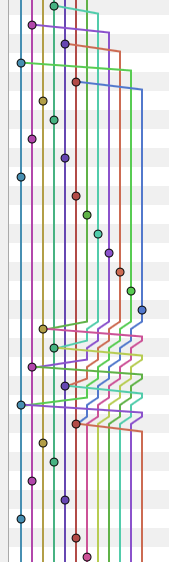

## Hooks de pre-commit pour git  <small>23/09/2017 @ PyConFr</small> ## pre-commit hooks == PAIN ? <figure> <a href="images/2017/09/PZO8500Dargley_500.jpeg"><img src="CommitStrip-2015-09-18.jpg" alt="CommitStrip du 2015/09/18" style="width: 40%"></a> <figcaption><small>CommitStrip du 2015/09/18</small></figcaption> </figure> <img class="fragment" src="tampon_oui_mais_pas_que.png" alt="Oui mais pas que !" style="position: fixed; top: 50%; left: 70%"> Note: - demander au public qui les utilise - à VSCT, environnement multi-OS, ont acquis une mauvaise réputation ## Bonjour ! <img src="avatar.jpg" alt="Une image d'avatar" style="border: none; width: 15%"> - <i class="fa fa-map-marker"></i> Nantes - <i class="fa fa-pencil"></i> https://chezsoi.org + <i class="fa fa-rss"></i> [<img src="shaarli-icon.png" style="margin: 0; width: 3rem">](https://chezsoi.org/shaarli) - <i class="fa fa-code"></i> @ [Voyages-Sncf.com](https://open.voyages-sncf.com) ## Plan - Pourquoi les utiliser ? - Leur fonctionnement - Démo ## Pourquoi les utiliser ? - gain de temps - historique `git` + propre - validation côté client **ET** serveur - "un outil pour les gouverner tous" etc. ## Pourquoi celui-ci ? <a href="http://pre-commit.com"> <img alt="pre-commit logo" src="pre-commit-logo.png" style="vertical-align: middle; width: 8rem"> pre-commit.com </a> - en Python <span style="font-size: 1.8rem">(alt: [overcommit](https://github.com/brigade/overcommit) en Ruby, [git-hooks](https://github.com/git-hooks/git-hooks) en Go)</span> - une [bibliothèque](http://pre-commit.com/hooks.html) de **126** _hooks_, dont: `autopep8`, `flake8`, `prettier`, `prospector`, `pylint`, `yapf`... - 5 lignes pour **créer** un nouveau _hook_ Note: - nom pourri - historiquement développé par Yelp ## Fonctionnement (1/2)  **Installation:** - la configuration est lue depuis `.pre-commit-config.yaml` - clonage des repos `git` contenants les _hooks_ en Python / Go / NodeJS / Ruby / Swift / Docker - les éventuelles `additional_dependencies` sont installées (pour Python: dans un `venv`) Note: sur le côté, non ce n'est pas une partition de Guitar Hero, mais bien un historique git ## Fonctionnement (2/2) **Exécution:** - les modifications non indexées de fichiers sont remisées (`git stash`) - les fichiers modifiés sont passés aux _hooks_, selon: * le `type` du _hook_: `text`, `executable`, `python`... * si leur nom correspond à la _regex_ `files` du _hook_ ## Demo ## Installation ```bash pip install pre-commit # -> donne accès à la commande `pre-commit` pre-commit install # -> génère .git/hooks/pre-commit ``` ## CLI basics ```bash pre-commit run $hook_id # -> exécute un unique hook sur tous les fichiers "addés" pre-commit run --files $file1 $file2 # -> exécute tous les hooks sur des fichiers spécifiques pre-commit run --all-files # -> exécute tous les hooks sur tous les fichiers versionnés ``` ## Local hooks ```yaml - repo: local hooks: - id: check-bash-syntax name: Check Shell scripts syntax corectness language: system entry: bash -n files: \.sh$ ``` ## Bonus [Intégration continue](http://pre-commit.com/#usage-in-continuous-integration) **super** simple. Exemple d'un `.travis.yml` pour [Travis CI](travis-ci.org): ```yaml language: python python: "3.6" install: pip install pre-commit script: pre-commit run --all-files ``` Note: pour hooks ne nécessitant pas Go/NodeJS/Java ## Bonus MAJ des hooks au dernier tag publié : `pre-commit autoupdate` → modifie `.pre-commit-config.yaml` ## Windows support - Cygwin : **100%** supporté - MSYS2 : **100%** supporté - Git For Windows : [bugfix en cours](https://github.com/pre-commit/pre-commit/issues/620) - TortoiseGit: pas supporté Note: pour Cygwin, j'ai testé les hooks Go & NodeJS ## Astuces - 2 solutions pour ne pas jouer les hooks 😦 : `git commit --no-verify` `export SKIP=$hook_id` - pour inspecter les repos / venv des hooks: `~/.cache/pre-commit/` <small>(cf. aussi: [fonctions shell](https://github.com/Lucas-C/pre-commit-hooks/blob/master/README.md#handy-shell-functions))</small> ## That's all folks ! <img alt="Mr. Bean tire avec un pistolet sur une ampoule pour éteindre la lumière" src="MrBeanSwitchOff.gif" style="width: 80%">